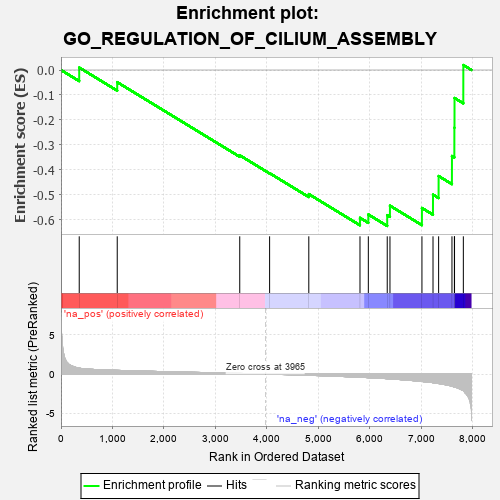
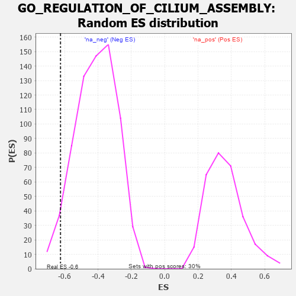

| | | Dataset | 7d |
| Phenotype | NoPhenotypeAvailable |
| Upregulated in class | na_neg |
| GeneSet | GO_REGULATION_OF_CILIUM_ASSEMBLY |
| Enrichment Score (ES) | -0.6248591 |
| Normalized Enrichment Score (NES) | -1.514613 |
| Nominal p-value | 0.04125178 |
| FDR q-value | 0.17700744 |
| FWER p-Value | 1.0 |
Table: GSEA Results Summary

Fig 1: Enrichment plot: GO_REGULATION_OF_CILIUM_ASSEMBLY
Profile of the Running ES Score & Positions of GeneSet Members on the Rank Ordered List
| PROBE | GENE SYMBOL | GENE_TITLE | RANK IN GENE LIST | RANK METRIC SCORE | RUNNING ES | CORE ENRICHMENT | | 1 | TAPT1 | | | 354 | 0.743 | 0.0098 | No |
| 2 | CDK10 | | | 1092 | 0.465 | -0.0488 | No |
| 3 | ATG3 | | | 3471 | 0.081 | -0.3418 | No |
| 4 | ATG5 | | | 4051 | -0.016 | -0.4134 | No |
| 5 | CEP97 | | | 4812 | -0.160 | -0.4972 | No |
| 6 | BBS4 | | | 5806 | -0.407 | -0.5923 | Yes |
| 7 | CENPJ | | | 5968 | -0.460 | -0.5789 | Yes |
| 8 | IFT88 | | | 6335 | -0.590 | -0.5817 | Yes |
| 9 | CDKL1 | | | 6388 | -0.610 | -0.5437 | Yes |
| 10 | DZIP1 | | | 7009 | -0.940 | -0.5529 | Yes |
| 11 | TCHP | | | 7224 | -1.099 | -0.4994 | Yes |
| 12 | CYLD | | | 7333 | -1.206 | -0.4249 | Yes |
| 13 | SAXO1 | | | 7592 | -1.543 | -0.3445 | Yes |
| 14 | CROCC | | | 7639 | -1.628 | -0.2313 | Yes |
| 15 | MNS1 | | | 7642 | -1.633 | -0.1122 | Yes |
| 16 | DCDC2 | | | 7813 | -2.099 | 0.0199 | Yes |
Table: GSEA details [plain text format]

Fig 2: GO_REGULATION_OF_CILIUM_ASSEMBLY: Random ES distribution
Gene set null distribution of ES for GO_REGULATION_OF_CILIUM_ASSEMBLY